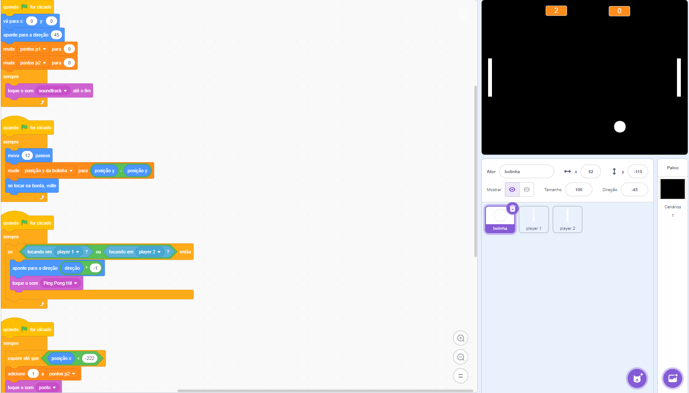
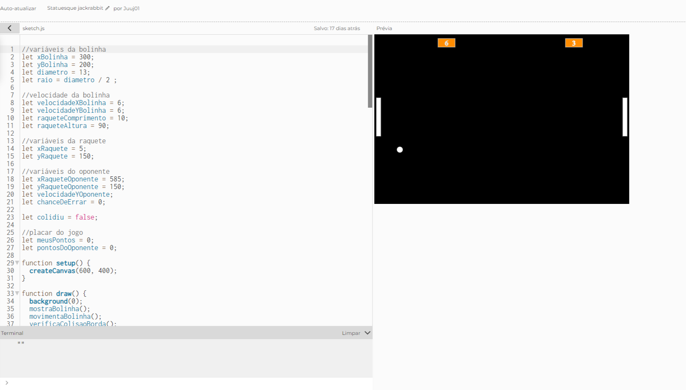
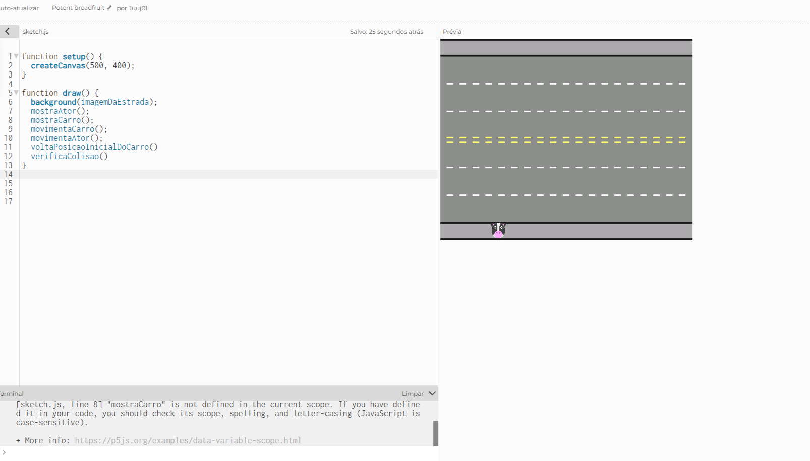

Meus Projetos
Esses são alguns projetos que realizei durante meus estudos na Alura, que são 2 versões do jogo Pong feitos na ferramenta Scratch e na linguagem Java-Scrip respectivamente, e uma versão do jogo Cross Roads em Java-Scrip.


